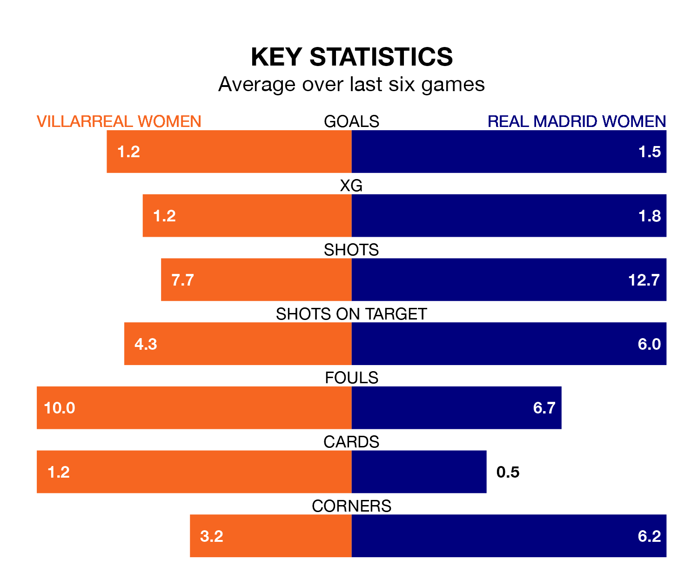

Real Madrid Women travel to Ciudad Deportiva del Villarreal for Saturday's late match against Villarreal Women looking to bounce back from defeat last time out in Liga F.
Madrid Women, who sit second in the league after 21 games, fell to a 3-0 home defeat to Barcelona Women on March 24.
They face a Villarreal side who secured a draw in their last match, a 1-1 tie with Levante Las Planas, and who sit 11th in the table.
With 51 goals in 21 games so far this season, Madrid Women are the league's second-highest scorers with 2.4 goals per game. And they are conceding fewer than average, letting in 25 goals at a rate of 1.2 per game.
Villarreal, meanwhile, are below average scorers, with 0.9 goals per game, compared to a league average of 1.6. They have conceded 1.7 goals per game.
With María Isabel Rodríguez Rivero between the sticks, the visitors can rely on one of the league's safest pair of hands. She has kept six clean sheets in her 19 appearances this season in Liga F.
In the home team's net, Carmen Carbonell Gil has two clean sheets in 17 games. She has conceded a goal every 55 minutes, 90% more often than the 107 minutes between goals for Rodríguez Rivero.
Villarreal are in mixed form in Liga F, with two wins and three draws from their last six games.
With four wins and a draw over that period, Madrid Women's form is better – they have taken 13 points from 18, compared to Villarreal's nine.
In the last five years, Villarreal and Madrid Women have played each other on five occasions. Madrid Women won all of them.
On average, Villarreal scored 0.2 goals and Madrid Women 2.0 in those matches.
Their last meeting was on October 7, when Madrid Women won 1-0 at home.
Updated: 12:16 (UTC), 25/03/24